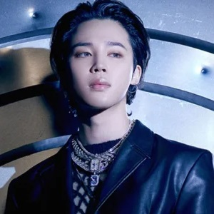

BTS
방탄 소년단
Quem são e o que fazem
Composto por RM, Jin, Suga, J-Hope, Jimin, V e Jungkook, o BTS (Bangtan Sonyeodan em coreano romanizado) é um grupo masculino de k-pop que tem sido o principal nome no que chama-se de Hallyu ou Onda coreana. Juntamente com os doramas ou k-dramas, o grupo têm sido responsável por disseminar a cultura coreana através da música e dos conteúdos criados pelos membros.
-
RM é o líder do BTS. RM é o nome artístico de Kim Namjoon, nascido em Seul no ano de 1994. Namu, como é chamado pelos fãs, é um rapper, compositor e produtor. A maioria dos trabalhos do BTS possuem partes creditadas a ele assim como trabalhos de muitos outros artistas. RM tem duas mixtapes solos - RM e Mono - e um álbum que foi lançado em 2022 chamado Indigo
-
Jin é um dos membros do BTS. Kim Seokjin é cantor, dançarino e compositor nascido em 1992 também em Seul. Jin é conhecido pela beleza e se apresenta como o Worldwide Handsome. Jin também é ator de formação e podemos perceber o seu talento em diversos conteúdos do BTS. Jin possui lançamentos solos, em sua maioria tracks dos álbuns mas há alguns lançamentos especiais como Abyss, The Astronaut e a OST Yours
-

SUGA é um dos membros do BTS e uma das personas de Min Yoongi. SUGA é rapper, cantor, compositor e produtor nascido em Daegu no ano de 1993. Assim como RM também tem participação na composição de grande parte das músicas do grupo. É conhecido fora do BTS pelos seus trabalhos como produtor das músicas de outros artistas - alguns também possui participação -, além disso SUGA possui solos, duas mixtapes - D-1 e D-2 - e um álbum - D-Day - sob a persona de AGUST D.
-
J-Hope é um dos rappers do BTS junto com SUGA e RM e também é um dos dançarinos principais do BTS. Nascido em 1994 na cidade de Gwangju sob o nome Jung Hoseok, J-Hope compõe a rap line - o subgrupo de rappers de um grupo - e assim como os outros dois também é compositor e produtor e possui muitos créditos por composições e produções em músicas do grupo. Possui uma mixtape chamada Hope World e um álbum chamado Jack in the Box - que mostra um lado completamente diferente do J-Hope, levando à teoria de que Jack seria uma de suas personas-. Os trabalhos solos de J-Hope o renderam uma apresentação solo no palco principal de uma das edições do Lollapaloza.
-

Jimin é um dos cantores do BTS e também compõe o subgrupo de dançarinos. Jimin nasceu em 1995 na cidade de Busan. Ele é um especialista em dança moderna que mostra seu talento e conhecimento em diversas perfomances do BTS, tendo algumas apresentações memoráveis como a do MAMA em 2016 onde dançou vendado com J-Hope. Apesar de ter inúmeros trabalhos solos dentro do BTS, somente nos últimos anos Jimin tem feito trabalhos solo externos ao grupo sendo a OST With You uma delas, também temos alguns collabs feitos como Vibe - collab com Taeyang - e Angel - Trilha Sonora do Velozes e Furiosos 10. Recentemente, Jimin também lançou o seu álbum FACE, com músicas que alcançaram o Hot 100 da Billboard
-
V é um dos membros do BTS. Kim Taehyung é um dos principais rostinhos bonitos do BTS. Nascido em Daegu no ano de 1995. V é o dono de uma das vozes mais marcantes e fortes do grupo e explora bem isso nos trabalhos solo. Alguns de seus lançamentos solo fora dos álbuns são músicas de Natal para as fãs e também outras músicas como Winter Bear. Tae participa da composição de algumas de suas músicas e pode ser visto guiando o processo de criação da música de abertura do BTS In the Soop - um dos conteúdos extra gravados pelo grupo. Além disso temos algumas OSTs gravadas por V como Sweet Night e Christmas Tree. V é o único dos membros do BTS que se arriscou nas telinhas dos doramas, sendo parte do elenco de Hwarang.
-
Jungkook ou JK como também é chamado pelos fãs, é o mais jovem dos membros do BTS. Dançarino e cantor principal, Jungkook funciona como centro das perfomances na maior parte delas. Ele também é conhecido por algumas composições e pela sensibilidade que possui seja em sua arte ou em sua relação com o ARMY. JK é de Busan e nasceu em 1997. Ele tem em sua conta criações especiais para os fãs como a música Magic Shop, além de algumas produções como Your eyes tell. Além de cantor, dançarino, compositor e produtor, Jungkook também explorou sua faceta como diretor de arte do videoclipe de Life Goes On. Ele possui alguns trabalhos solos nos álbuns do grupo e recentemente lançou uma parceria com Charlie Puth.